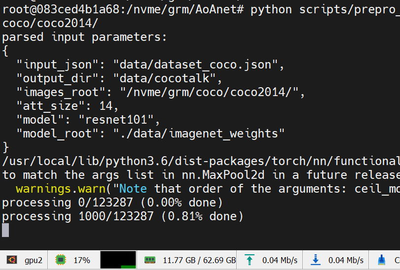

Tech Report
在 COCO 2014 数据集上训练 AoAnet¶
基于AoAnet进行训练，参考文献：https://arxiv.org/abs/1908.06954
@inproceedings{huang2019attention,
title={Attention on Attention for Image Captioning},
author={Huang, Lun and Wang, Wenmin and Chen, Jie and Wei, Xiao-Yong},
booktitle={International Conference on Computer Vision},
year={2019}
}数据¶
数据集的下载¶
COCO 图片¶
项目需要 COCO 2014 数据集的 train 和 val，可以从官网下载：
wget -c http://images.cocodataset.org/zips/train2014.zip http://images.cocodataset.org/annotations/image_info_val2014.zip全部链接：
http://images.cocodataset.org/zips/train2014.zip
http://images.cocodataset.org/annotations/annotations_trainval2014.zip
http://images.cocodataset.org/zips/val2014.zip
http://images.cocodataset.org/annotations/image_info_val2014.zip
http://images.cocodataset.org/zips/test2014.zip
http://images.cocodataset.org/annotations/image_info_test2014.zip
也可以通过 Redmon 的镜像站：https://pjreddie.com/projects/coco-mirror/
注意train2014中有一张图像坏掉了，需要替换，参考，替换方式：
cd train2014
curl https://msvocds.blob.core.windows.net/images/262993_z.jpg >> COCO_train2014_000000167126.jpg预处理后的描述¶
wget http://cs.stanford.edu/people/karpathy/deepimagesent/caption_datasets.zip代码仓库¶
git clone https://github.com/husthuaan/AoANet.git --recursive注意两个submodule是不是都下载下来了。
数据预处理¶
预处理标注¶
下面这个预处理需要python2的环境，搭建环境：
conda create -n py2 python<3
conda activate py2
conda install pytorch cpuonly -c pytorch
conda install sixpython scripts/prepro_ngrams.py --input_json data/dataset_coco.json --dict_json data/cocotalk.json --output_pkl data/coco-train --split train本项目使用 ResNet 提取特征，预处理流程如下。
下载模型：
curl https://download.pytorch.org/models/resnet101-63fe2227.pth >> ./data/imagenet_weights/resnet101.pth创建环境，此处使用docker
# docker-compose.yml
version: "3"
services:
pytorch:
image: "ufoym/deepo:pytorch-cu111"
ports:
- "0:22"
volumes:
- $HOME:$HOME
- /nvme:/nvme
# 记得把代码所在目录映射进来
shm_size: "32gb"
deploy:
resources:
reservations:
devices:
- capabilities: ["gpu"]docker-compose up -d
docker exec -it AoAnet_pytorch bash # 进入容器
cd # 代码所在目录
pip install h5py yacs lmdbdict pyemd
export PYTHONPATH=`pwd`然后就可以开始进行预处理
python scripts/prepro_labels.py --input_json data/dataset_coco.json --output_json data/cocotalk.json --output_h5 data/cocotalkpython scripts/prepro_feats.py --input_json data/dataset_coco.json --output_dir data/cocotalk --images_root $IMAGE_ROOT预处理速度很慢，耐心等待
在训练时遇到了问题，没库，没依赖，作者也不提供一下参考
sudo apt install openjdk-8-jdk # 依赖
pip install gensim # NLP库
# 下载Word2Vec的一个模型
cd coco-caption/pycocoevalcap/wmd/data
wget -c "https://s3.amazonaws.com/dl4j-distribution/GoogleNews-vectors-negative300.bin.gz"
gzip -d GoogleNews-vectors-negative300.bin.gzfrom gensim import models
w = models.KeyedVectors.load_word2vec_format('./GoogleNews-vectors-negative300.bin', binary=True)作者怎么不把依赖写全，非要等到跑到一个 epoch 结束扔个异常出来。气。抓异常只抓(RuntimeError, KeyboardInterrupt)，您就没考虑过有人可能没装全依赖吗。
注意还有一处调用torch.optim.lr_scheduler.ReduceLROnPlateau()参数顺序因PyTorch版本调整有所改变，需要将verbose参数移到最后。
torch.optim.lr_scheduler.ReduceLROnPlateau(optimizer, mode='min', factor=0.1, patience=10, threshold=0.0001, threshold_mode='rel', cooldown=0, min_lr=0, eps=1e-08, verbose=False)使用 ResNet feature¶
python scripts/prepro_feats.py --input_json data/dataset_coco.json --output_dir data/cocotalk --images_root $IMAGE_ROOT使用 ResNet feature 训练，需要修改train.sh中的配置使目录指向 cocotalk 目录。实测 25 epoch 指标：
Bleu_1: 0.724
Bleu_2: 0.551
Bleu_3: 0.405
Bleu_4: 0.295
METEOR: 0.250
ROUGE_L: 0.530
CIDEr: 0.954
SPICE: 0.182
WMD: 0.533指标并不能达到论文中的高度，怀疑是数据使用出了问题。论文中使用的 feature 是 bottom-up feature，
使用 Bottom-Up feature¶
Download pre-extracted feature from link. You can either download adaptive one or fixed one.
下载方式如下：
mkdir data/bu_data; cd data/bu_data
wget https://storage.googleapis.com/up-down-attention/trainval.zip
unzip trainval.zip
# 切回项目根目录
cd ..
conda acitivate py2 # python2文件，因为reader迭代器返回了byte
python scripts/make_bu_data.py --output_dir data/cocobu然后我把train.sh改了回去(git checkout train.sh)，备份了checkpoints，清理项目目录，重新开始训练。
CUDA_VISIBLE_DEVICES=0 bash train.sh所有训练选项：
Namespace(
acc_steps=1,
att_feat_size=2048,
att_hid_size=512,
batch_size=16,
beam_size=1,
bleu_reward_weight=0,
block_trigrams=0,
cached_tokens='coco-train-idxs',
caption_model='aoa',
checkpoint_path='log/log_aoanet',
cider_reward_weight=1,
ctx_drop=1,
decoder_type='AoA',
drop_prob_lm=0.5,
dropout_aoa=0.3,
fc_feat_size=2048,
grad_clip=0.1,
id='aoanet',
input_att_dir='data/cocobu_att',
input_box_dir='data/cocobu_box',
input_encoding_size=1024,
input_fc_dir='data/cocobu_fc',
input_json='data/cocotalk.json',
input_label_h5='data/cocotalk_label.h5',
label_smoothing=0.2,
language_eval=1,
learning_rate=0.0002,
learning_rate_decay_every=3,
learning_rate_decay_rate=0.8,
learning_rate_decay_start=0,
length_penalty='',
load_best_score=1,
logit_layers=1,
losses_log_every=25,
max_epochs=50,
max_length=20,
mean_feats=1,
multi_head_scale=1,
noamopt=False,
noamopt_factor=1,
noamopt_warmup=2000,
norm_att_feat=0,
norm_box_feat=0,
num_heads=8,
num_layers=2,
optim='adam',
optim_alpha=0.9,
optim_beta=0.999,
optim_epsilon=1e-08,
reduce_on_plateau=False,
refine=1,
refine_aoa=1,
remove_bad_endings=0,
rnn_size=1024,
rnn_type='lstm',
save_checkpoint_every=6000,
save_history_ckpt=0,
scheduled_sampling_increase_every=5,
scheduled_sampling_increase_prob=0.05,
scheduled_sampling_max_prob=0.5,
scheduled_sampling_start=0,
self_critical_after=-1,
seq_length=16,
seq_per_img=5,
start_from='log/log_aoanet',
train_only=0,
use_att=True,
use_bn=0,
use_box=0,
use_fc=True,
use_ff=0,
use_multi_head=2,
use_warmup=0,
val_images_use=-1,
vocab_size=9487,
weight_decay=0
)注意使用nohup时需要使用2) SIGINT打断（kill默认发送的是15) SIGTERM），
kill -2 $pid # 注意要打断python父程序（pid最小的那个）而不是启动脚本用的bash！注意由于PyTorch 1.5中BiLSTM模块更新导致pack_padded_sequence的length只能是CPU int64 tensor，参考 ISSUE 43227，之前的版本会将length隐式复制到内存，所以后来PyTorch废弃了这种写法。
我们需要修改models/AttModel.py中sort_pack_padded_sequence函数如下：
def sort_pack_padded_sequence(input, lengths):
sorted_lengths, indices = torch.sort(lengths, descending=True)
# 修改下一行，加入.cpu()
tmp = pack_padded_sequence(input[indices], sorted_lengths.cpu(), batch_first=True)
inv_ix = indices.clone()
inv_ix[indices] = torch.arange(0,len(indices)).type_as(inv_ix)
return tmp, inv_ix另外，半年之后，PaddlePaddle还是没有pack_padded_sequence这个 API，可能需要自己写。参照：https://www.paddlepaddle.org.cn/documentation/docs/faq/train_cn.html#paddletorch-nn-utils-rnn-pack-padded-sequencetorch-nn-utils-rnn-pad-packed-sequenceapi
测试指标¶
本次使用五个指标：Bleu、METEOR、ROUGE-L、CIDEr、SPICE。
目标指标如下：
{
‘Bleu_1’: 0.8054903453672397,
‘Bleu_2’: 0.6523038976984842,
‘Bleu_3’: 0.5096621263772566,
‘Bleu_4’: 0.39140307771618477,
‘METEOR’: 0.29011216375635934,
‘ROUGE_L’: 0.5890369750273199,
‘CIDEr’: 1.2892294296245852,
‘SPICE’: 0.22680092759866174
}Perplexity¶
其中，\(L\)是句子的长度，\(\operatorname{PPL}(w_{1:L},I)\)是根据图像\(I\)给出的描述句子\(w_{1:L}\)的\(\operatorname{preplexity}\)，而\(\operatorname{P}(w_n | w_{1:n-1}, I)\)是根据图像\(I\)和前\(n-1\)个单词组成的序列生成下一个单词\(w_n\)的概率。
\(\operatorname{preplexity}\)用于判断模型的稳定性，得分越低就认为模型的预测越稳定，翻译质量越好。
Bleu¶
Bilingual Evaluation Underatudy，用于分析候选译文和参考译文中\(N\)元组共同出现的程度，重合程度越高就认为译文质量越高。
\(BP\)表示短句子的惩罚因子（Brevity Penalty），用\(l_r\)表示最短的参考翻译的长度，\(l_c\)表示候选翻译的长度，具体计算方法：
\(P(n)\)表示 n-gram 的覆盖率，计算方式为：
其中\(\text{Count}_{\text{clip}}\)是截断技术，其计数方式为：将一个 n-gram 在候选翻译中出现的次数，与在各个参考翻译中出现次数的最大值进行比较，取较小的那一个。
METEOR¶
Metric for Evaluation of Translation with Explicit ORdering 基于 BLEU 进行了一些改进，使用 WordNet 计算特有的序列匹配、同义词、词根和词缀，以及释义之间的匹配关系。
其中\(Pen = \frac{\#chucks}{m}\)为惩罚因子，惩罚候选翻译中词序与参考翻译中次词序的不同。
其中\(\alpha\)为超参数，\(P=\frac{m}{c}\)，\(R = \frac{m}{r}\)，\(m\)为候选翻译中能够被匹配的一元组的数量，\(c\)为候选翻译的长度，\(r\)为参考翻译的长度。
METEOR 基于准确率和召回率，得分越高说明
ROUGE¶
Recall-Oriented Understudy for Gisting Evaluation，大致分为四种：ROUGE-N，ROUGE-L，ROUGE-W，ROUGE-S。
其中\(n\)表示 n-gram，\(\text{Count}{(\text{gram}_n)}\)表示一个 n-gram 出现的次数，\(\text{Count}_{\text{match}}{(\text{gram}_n)}\)表示一个 n-gram 共现的次数。
其中，\(X\)表示候选摘要，\(Y\)表示参考摘要，\(\operatorname{LCS}\)表示候选摘要与参考摘要的最长公共子序列的长度，\(m\)表示参考摘要的长度，\(n\)表示候选摘要的长度。
CIDEr¶
Consensus-based Image Description Evaluation 将每个句子看成文档，计算其 Term Frequency Inverse Document Frequency（TF-IDF）向量的余弦夹角，据此得到候选句子和参考句子的相似程度。
其中\(c\)表示候选标题，\(S\)表示参考标题集合，\(n\)表示评估的是 n-gram，M 表示标题的数量，\(g^n(\cdot)\)表示基于 n-gram 的 TF-IDF 向量。
TF-IDF 的计算方式为：
SPICE¶
Semantic Propositional Image Caption Evaluation 使用基于图的语义表示来编码 caption 中的 objects，attributes 和 relationships。它先将待评价 caption 和参考 captions 用 Probabilistic Context-Free Grammar (PCFG) dependency parser parse 成 syntactic dependencies trees，然后用基于规则的方法把 dependency tree 映射成 scene graphs。最后计算待评价的 caption 中 objects, attributes 和 relationships 的 F-score 值。
其中，\(c\)表示候选标题，\(S\)表示参考标题集合，\(G(\cdot)\)表示利用某种方法将一段文本转化为一个 Scene Graph，\(T(\cdot)\)表示将一个 Scene Graph 转换为一个 Tuple 的集合。\(\otimes\)运算类似于交集，但其匹配类似于 METEOR 中的基于 WordNet 的匹配。
WMD¶
Word Mover’s Distance3
算法分析¶
Attention 机制¶
Encoder¶
设\((h_1, h_2, \ldots, h_n)\)是输入句子的隐藏向量表示。这些向量可以是一个 bi-LSTM 的输出，可以捕捉每个词在剧中的语义信息。
Decoder¶
设第\(i\)个 decoder 的 hidden state 是\(s_i\)，使用一个递归公式计算：
其中，\(s_{i-1}\)是上一个隐藏向量，\(y_{i-1}\)是上一步生成的词向量，\(c_i\)是上下文信息。
其中\(a\)可以是任何函数，通常采用一个前馈神经网络。
最终，对分数正则化：
最终计算\(c_i\)，一个\(h_j\)的加权平均
或者，一个向量化的表示：
Self-Critical Sequence Training4¶
REINFORCE 方法¶
在之前，NLP 问题经常使用交叉熵损失函数来优化指标，这有两个不足：一是不能直接优化 NLP 指标，如 CIDEr 等；二是会引起“偏置爆炸”情况。不能直接优化 CIDEr 是因为 CIDEr 的指标是离散的，无法求取梯度。在4中将 LSTM 模型视为 agent，将单词和 feature 视作 environment。LSTM 网络的参数，\(\theta\)，定义了一个 policy \(p_\theta\)；其 state 就是它的 cells 和 hidden state。其 action 就是预测下一个单词。每个 action 之后，agent 更新其内部的 state。当模型输出 End-Of-Sequence 后，agent 观测到一个 reward，这个 reward 就可以是生成的句子的 CIDEr 得分。目标是最小化负的 reward 期望
\(w^w = (w_1^s, \ldots, w_T^s)\)，\(w_t^s\)是在时间\(t\)从模型中采样出的单词。实际中，通常用\(p_\theta\)中的一个采样估计\(L(\theta)\)。
使用 REINFORCE 方法计算不可微的 reward function 的梯度：
在实际中，我们从\(p_\theta\)中随机采样\(w^s = (w_1^s, \ldots, w_T^s)\)
class LanguageModelCriterion(nn.Module):
def __init__(self):
super(LanguageModelCriterion, self).__init__()
def forward(self, input, target, mask):
# truncate to the same size
target = target[:, :input.size(1)]
mask = mask[:, :input.size(1)]
output = -input.gather(2, target.unsqueeze(2)).squeeze(2) * mask
output = torch.sum(output) / torch.sum(mask)
return outputBottom-Up feature5¶
文献5将图像描述生成分成两个任务：一个基于非视觉的或任务上下文驱动的 Attention 机制，命名为 top-down；一个基于纯前馈视觉感知，命名为 bottom-up。文中使用 ResNet101-FasterRCNN 提取 ROI 的 feature vector，将其加权求和得到 bottom-up feature。
AoAnet 论文中训练使用的就是该文献作者提供的 COCO 2014 feature。
AoAnet¶
AoA 机制¶
遵从文献6中的表述，记\(f_{att}(\boldsymbol{Q}, \boldsymbol K, \boldsymbol V)\)为一个 Attention 操作。
作者提出使用 AoA 模块计算 attention 结果和 query 的相关性。AoA 模块生成通过两个独立的线性变化生成 information vector \(i\) 和 attention gate \(g\)
where \(W_{q}^{i}, W_{v}^{i}, W_{q}^{g}, W_{v}^{g} \in \mathbb{R}^{D \times D}, b^{i}, b^{g} \in \mathbb{R}^{D}\)，\(D\)是\(\boldsymbol q\)和\(\boldsymbol v\)的维度，\(\hat{\boldsymbol{v}}=f_{a t t}(\boldsymbol{Q}, \boldsymbol{K}, \boldsymbol{V})\)是 Attention 的结果，\(\sigma\)表示 sigmoid 激活函数。
紧接着，AoA 又增加了一层 Attention
整个操作的公式为：
实现就是一层的事：
if self.decoder_type == 'AoA':
# AoA layer
self.att2ctx = nn.Sequential(nn.Linear(self.d_model * opt.multi_head_scale + opt.rnn_size, 2 * opt.rnn_size), nn.GLU())Encoder¶
首先，利用 bottom-up features，每张图片有若干 feature \(\boldsymbol A = \{ \boldsymbol a_1, \boldsymbol a_2, \ldots, \boldsymbol a_k\}\) ， \(\boldsymbol a_i \in \mathbb{R}^D\) 。 \(\boldsymbol A\) 将被送入 AoA refiner 中，通过一个 MultiHeadAttention，外加跳跃连接，最终经过 LayerNorm。
Decoder¶
与 LSTM 中的 decoder 类似，同样采用一个表征上下文信息的 vector \(\boldsymbol c\)计算下一个词的条件概率：
\(W_P\)是权重矩阵，\(|\Sigma{}|\)是词汇量。
where \(\bar{\boldsymbol{a}}=\frac{1}{k} \sum_{i} \boldsymbol{a}_{i}\)， \(\boldsymbol c_{-1} = 0\)，\(\boldsymbol c_t\)由以下公式计算得到
Training & Objective¶
在文献中，前 25 epoch 使用交叉熵损失
紧接着的 40 epoch 使用 Self-Critical Sequence Training，对 CIDEr 进行调优
模型分析¶
类图¶
classDiagram
class AoAModel {
use_mean_feats=1
use_multi_head=2
ctx2att: AoA
refiner: AoA_Refiner_Core
core: AoA_Decoder_Core
__init__(opt)
_prepare_feature(fc_feats, att_feats, att_masks) (mean_feats, att_feats, p_att_feats, att_masks)
}
class AttModel {
embed: [Embedding, ReLU, Dropout]
fc_embed: [Embedding, ReLU, Dropout]
att_embed: [Embedding, ReLU, Dropout]
logit: Linear
vocab: [bad endings, such as 'a', 'the', and so on.]
__init__(opt)
init_hidden(batch_size) state
clip_att(att_feats, att_masks) (att_feats, att_masks)
_prepare_feature(fc_feats, att_feats, att_masks) (mean_feats, att_feats, p_att_feats, att_masks)
_forward(fc_feats, att_feats, seq, att_masks=None) outputs
get_logprobs_state(it, fc_feats, att_feats, p_att_feats, att_masks, state) (logprobs, state)
_sample_beam(fc_feats, att_feats, att_masks=None, opt=dict()) (deq, seqLogprobs)
_sample(fc_feats, att_feats, att_masks, opt=dict()) (seq, seqLogprobs)
}
class CaptionModel {
forward(*args, **kwargs) outputs
beam_search(init_state, init_logprobs, *args, **kwargs) done_beams
beam_step(logprobsf, unaug_logprobsf, beam_size, t, beam_seq, beam_seq_logprobs, beam_seq_logprobs_sum, state) (beam_seq, beam_seq_logprobs, beam_logprobs_sum, state, candidates)
sample_next_word(logprobs, sample_method, temprature) (it, sampleLogprobs)
}
class AoA_Refiner_Core {
layer: ModuleList(AoA_Refiner_Layer * 6)
}
class AoA_Refiner_Layer {
self_attn: MultiHeadedDotAttention
feed_forward: PositionwiseFeedForward
sublayer: [SublayerConnection]
}
class MultiHeadedDotAttention {
d_k
h
project_k_v
norm: LayerNorm
linears: [Linear] * [1+2*project_k_v]
aoa_layer: [Linear, GLU]
outout_layer: lambda x:x
dropout
forward(query, value, key)
}
class PositionwiseFeedForward {
w_1: Linear
w_2: Linear
dropout: Dropout
forward(x)
}
class SublayerConnection {
norm: LayerNorm
dropout: Dropout
forward(x, sublayer)
}
class AoA_Decoder_Core {
att2ctx: AoA
attention: MultiHeadedDotAttention
ctx_drop: Dropout
forward(xt, xt, mean_feats, att_feats, p_att_feats, state, att_mask=None) (output, state)
}
class TransformerModel {
...ommitted
}
AoA_Refiner_Core "1"*--"6" AoA_Refiner_Layer
%% MultiHeadedDotAttention --* AoA_Refiner_Layer
AoA_Decoder_Core "1"*--"1" MultiHeadedDotAttention
AoA_Refiner_Layer "1"*--"1" MultiHeadedDotAttention
AoA_Refiner_Layer "1"*--"1" PositionwiseFeedForward
AoA_Refiner_Layer "1"*--"2" SublayerConnection
%% AoA_Refiner_Layer *-- AoA_Refiner_Core
CaptionModel <|-- AttModel
AttModel <|-- AoAModel
AttModel <|-- TransformerModel
AoAModel *-- AoA_Refiner_Core
AoAModel *-- AoA_Decoder_Core论文复现心得¶
- 要看 README，要多找代码资料，最好是找到有人成功复现了的
- 复现前的模型通常有各种参数，甚至会有根据参数动态调整网络结构的情况，这种情况下第一步是裁剪，裁剪后看精度能否保持
- 若第二步成功，那么下一步才是不同框架之间的抹平 API 差异
-
Rennie S J , Marcheret E , Mroueh Y , et al. Self-critical Sequence Training for Image Captioning[J]. IEEE, 2016. https://ieeexplore.ieee.org/document/8099614 ↩↩
-
Anderson P , He X , Buehler C , et al. Bottom-Up and Top-Down Attention for Image Captioning and Visual Question Answering[C]// 2018 IEEE/CVF Conference on Computer Vision and Pattern Recognition (CVPR). IEEE, 2018. https://ieeexplore.ieee.org/document/8578734 ↩↩
-
Huang, L. , Wang, W. , Chen, J. , & Wei, X. Y. . Attention on Attention for Image Captioning. International Conference on Computer Vision. Peking University; Peng Cheng Laboratory. https://ieeexplore.ieee.org/document/9008770 ↩